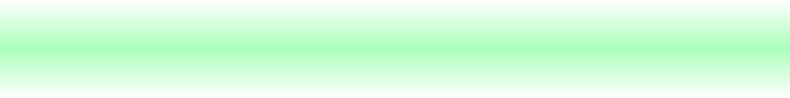

Use the ↑ and ↓ keys to select · Enter to boot · 'e' to edit · 'c' for a command line The highlighted entry will boot automatically in 5 s.

1 · GRUB BOOT MENU — the entry picker, first thing you see · optional
2 · BOOT SPLASH — Plymouth, while the system loads (before login) · pick one
3 · PLASMA SPLASH — KDE, while the desktop loads (after login) · pick one
// TO INSTALL YOUR SELECTION (NOBARA)
Select what to install above.
Run these from a terminal inside this folder. Pick one thing at a time — a GRUB menu,
a boot splash, or a Plasma splash (click a tile again to un-pick); the box shows exactly what to run
for it. Install as many as you like, one after another. The Plasma splash needs no reboot; full
step-by-step is in INSTALL.txt.